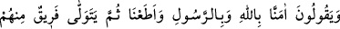

KALBLERİNDE
BİR HASTALIK MI VAR?
47. (Bazı insanlar:) “Allah’a ve Peygamber’e inandık ve itâat ettik” diyorlar;
ondan sonra da içlerinden bir gurup yüz çeviriyor. Bunlar inanmış değillerdir.
48. Onlar, aralarında hüküm vermesi için Allah’a ve Peygamber’e
çağırıldıklarında, bakarsın ki içlerinden bir kısmı yüz çevirip dönerler.
49. Ama, eğer (Allah ve Rasûlünün hükmettiği) hak kendi lehlerine ise, ona
boyun eğip gelirler.
50. Kalblerinde bir hastalık mı var; yoksa şüphe içinde midirler, yahut Allah ve
Rasûlünün kendilerine zulüm ve haksızlık edeceğinden mi korkuyorlar? Hayır, asıl
zâlimler kendileridir!
51. Aralarında hüküm vermesi için Allah’a ve Rasûlüne dâvet edildiklerinde,
müminlerin sözü ancak “İşittik ve itâat ettik” demeleridir. İşte asıl bunlar
kurtuluşa erenlerdir.
Bu âyet (47. âyet) münâfık Bişr hakkında inmiştir. Bu adam bir yahudiyle bir arazi
konusunda anlaşmazlığa düşmüş, aralarında hükmetmesi için o yahudiyi yahudi
âlimlerinden Kâ‘b b. Eşref’e, yahudi de onu Hz. Peygamber (s.a.)’e çağırmıştı.
“(Bazı insanlar:) “Allah’a ve Peygamber’e inandık ve itâat ettik” yâni emir ve
yasaklarında onlara itâat ettik “diyorlar.” İtâat, sadece emirle yapılan bir iştir. Çünkü o
inkıyad yâni emri tutma, boyun eğme demektir. İnkıyâd ise ibâdet ve benzerlerinin
aksine ancak bir emir verildikten sonra düşünülebilir.
Âyette çoğul kipinin kullanılması, bu sözü söyleyen kişinin böyle konuşmasına destek
veren taraftarlarının bulunduğunu bildirmek içindir. Nitekim kâtil içlerinden birisi